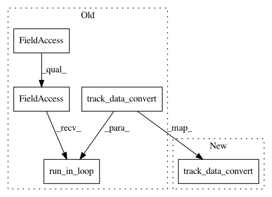

75926b8130a1262004517db1ebfa0b1f4cb18662,rasa/cli/data.py,,_convert_nlg_data,#Any#,271
Before Change
NLGMarkdownToYamlConverter,
)
rasa.utils.common.run_in_loop(telemetry.track_data_convert(args.format, "nlg"))
if args.format == "yaml":
rasa.utils.common.run_in_loop(
_convert_to_yaml(args, NLGMarkdownToYamlConverter())
After Change
NLGMarkdownToYamlConverter,
)
telemetry.track_data_convert(args.format, "nlg")
if args.format == "yaml":
rasa.utils.common.run_in_loop(
_convert_to_yaml(args, NLGMarkdownToYamlConverter())
In pattern: SUPERPATTERN
Frequency: 3
Non-data size: 5
Instances
Project Name: RasaHQ/rasa
Commit Name: 75926b8130a1262004517db1ebfa0b1f4cb18662
Time: 2020-09-16
Author: tom@rasa.com
File Name: rasa/cli/data.py
Class Name:
Method Name: _convert_nlg_data
Project Name: RasaHQ/rasa
Commit Name: 75926b8130a1262004517db1ebfa0b1f4cb18662
Time: 2020-09-16
Author: tom@rasa.com
File Name: rasa/cli/data.py
Class Name:
Method Name: _convert_core_data
Project Name: RasaHQ/rasa
Commit Name: 75926b8130a1262004517db1ebfa0b1f4cb18662
Time: 2020-09-16
Author: tom@rasa.com
File Name: rasa/cli/data.py
Class Name:
Method Name: _convert_nlu_data